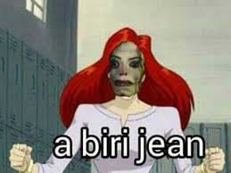

Quebras?
Em um dia ensolarado, tarde da manhã, quando a lua cheia era minguante, tudo era nada diferente do igual. A temperatura alta congelava o vento, que de desmotivado, motivava-se a soprar sem se por em movimento. E, isso era aquilo que, por não compreender era compreensível não ter compreendido. Poderia ser diferente e, só era igual porque ninguém me disse que, me dizendo, o que dissesse seria dito por aquele que diria o que ainda não me disseram; mas, eu acho que isso nada tem a dizer...
Então parti em direção contrária a oposta e, me disse em silêncio gritante: - Por que as palavras não dizem aquelas coisas pelas quais não foram escritas para dizer? Nisso esse negócio todo confundiam os meus olhos que queriam acompanhar o raciocínio lógico que, por sua vez, corria tanto quanto uma placa de 300km; o que não é muito, mas, é bastante. Eu pude fazer esta descoberta graças estar coberto pelo véu que o cobria, cabendo a mim descobri-lo da forma tradicional: retirando-o do estado de coberto para o estado de descoberto.
A C
O
P A
E L
R A
G É S
U
N D
T O
A R
M
E
M
?
Voltar